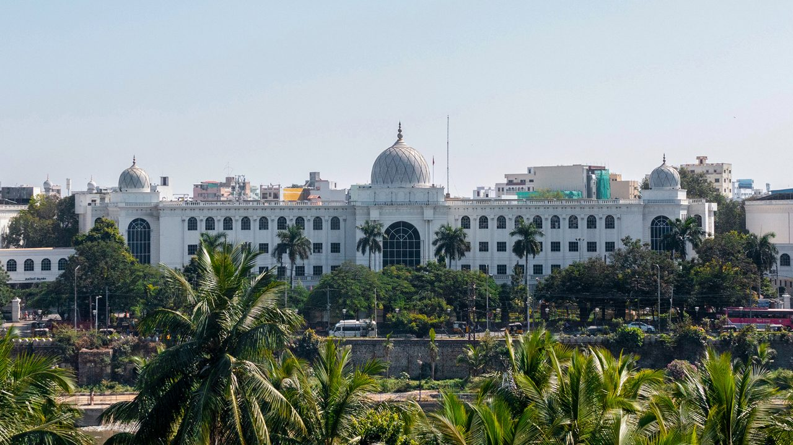

National Museum
★★★★★
Salar Jung Museum
One of the three national museums of India, Salar Jung Museum houses the personal collection of Salar Jung III — a lifetime of passionate global acquisitions containing over 40,000 rare artifacts. Highlights include the mesmerising Veiled Rebecca marble sculpture (which appears transparent), a room of rare clocks including the famous double-sided clock, ancient manuscripts, miniature paintings, and a stunning collection of European and Indian art across 38 galleries.
Established
1951
Timings
10AM – 5PM
Entry Fee
₹20 (Indian) | ₹500 (Foreign)
Closed
Fridays & National Holidays